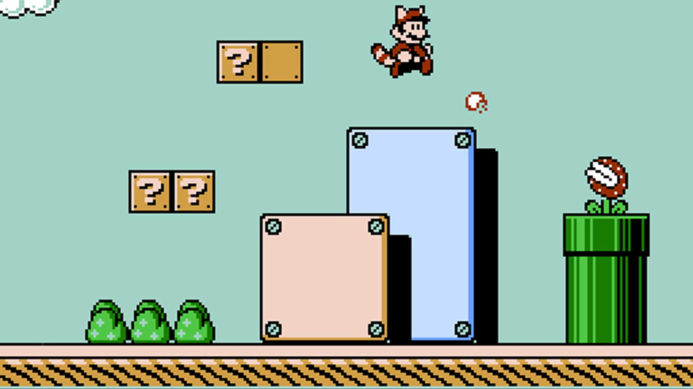
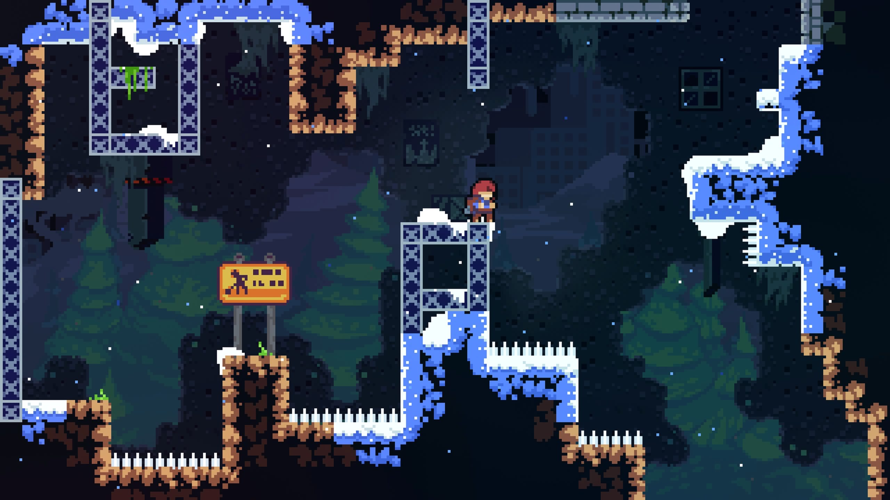
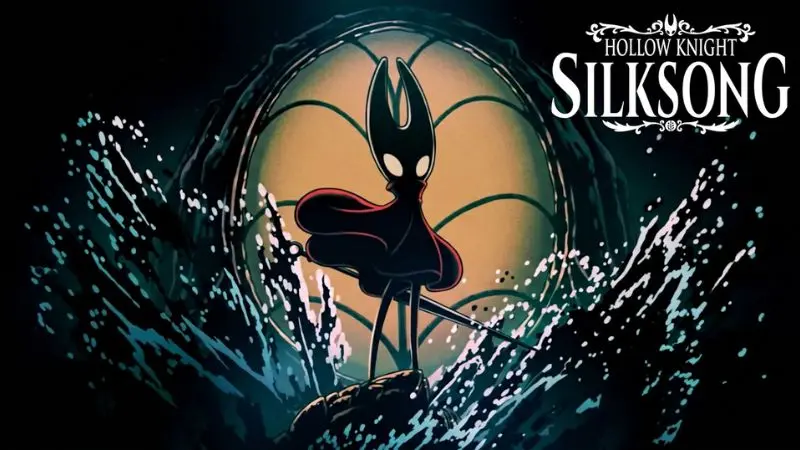

De ce prefer încă jocurile retro
motivele pentru care jocurile retro sunt încă apreciate și aspectele prin care acestea se diferențiază de multe dintre jocurile moderne.

Jocurile retro au avantajul oferit de sentimentul de nostalgie, un lucru care nu poate fi recreat de jocurile proaspăt lansate, dar acesta nu este singurul motiv pentru popularitatea lor. Cel mai mare avantaj, cred totuși, este simplitatea lor: pornești jocul și începi să te joci, fără să fii bombardat de oferte pentru lootbox-uri, battle pass-uri sau alte microtranzacții. Prin această simplitate, ele mai au și avantajul că sunt ușor de înțeles pentru toată lumea.Pentru a explica această idee printr-un exemplu cât mai simplu, puteți compara un joc mai vechi dintr-o serie cu un joc nou din aceeași serie, de exemplu GTA 3 și GTA 5 Online. Există zeci de exemple de acest gen.

Pentru mulți, incluzându-mă și pe mine, stilul grafic vechi, în special stilul pixelat din vremea primelor jocuri Mario sau Sonic, este mult mai plăcut decât stilul nou. Este foarte ușor de observat că acest stil este încă apreciat, având în vedere că titluri populare din prezent, precum Stardew Valley, Kingdom Two Crowns, Celeste sau Undertale, folosesc această estetică. Chiar și dacă vorbim de jocuri non-pixelate, putem vedea păstrarea farmecului specific jocurilor din acea perioadă prin titluri precum Hollow Knight, Don't Starve sau Mouse: P.I. For Hire. Toate aceste jocuri au acel farmec specific jocurilor retro, posibil și pentru că nu se iau mult prea în serios, în sensul că nu încearcă să facă totul absolut perfect.Personal, mi se pare că multe jocuri moderne se iau puțin prea în serios. Aici au și fanii partea lor de vină, pentru că multă lume se plânge online din orice motiv, iar dacă un joc nu este exact cum îl văd ei perfect în imaginația lor, atunci nu este bun deloc. Sunt foarte curios cum va reacționa lumea după ce va putea juca GTA 6, un alt joc despre care știm deja că va fi plin de microtranzacții, mai ales în modul online. Eu sper însă că măcar își va păstra hazul specific seriei GTA și că povestea nu va fi la fel de seacă și prost scrisă ca în cazul GTA Online.Revenind la subiect, deși jocurile video vechi sunt mai ușor de înțeles și mai simple, din punctul de vedere al dificultății ele sunt, de fapt, mai dificile. Jocurile moderne sunt mult în urmă când vine vorba de dificultate, dar aici mi se pare de înțeles, cel puțin într-o anumită măsură. Multă lume preferă jocurile mai dificile, dar în același timp există și oameni cărora nu le place să rămână blocați în niciun punct pentru mai mult de două sau trei încercări. Totuși, mi se pare greșit ca un joc să fie atât de simplu încât să treci prin el fără nicio problemă, deoarece asta îl face și plictisitor.Anul trecut, după lansarea mult așteptatului Hollow Knight: Silksong, multă lume s-a plâns de dificultatea jocului, deși, în comparație cu alte jocuri, este chiar destul de simplu.

Ca o scurtă concluzie, aș spune că problema principală a majorității jocurilor moderne este că și-au pierdut personalitatea și nu mai au acel ceva care le făcea speciale. Există excepții, dar, din păcate, nu foarte multe.